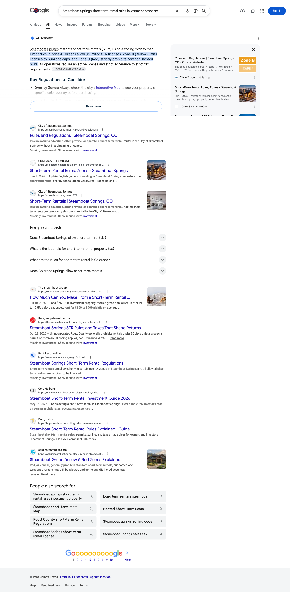
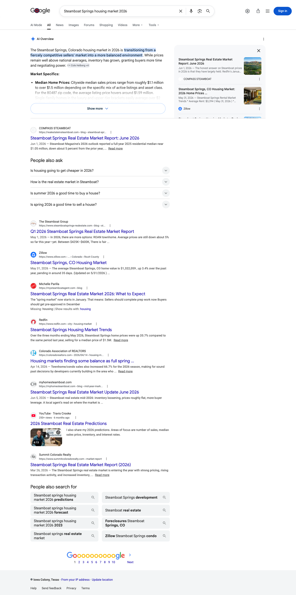

July 2026 | The Cheryl Foote Team
Executive summary
In July, realestateinsteamboat.com was named as a source on all twelve of the buyer and investor questions we track. Across the three engines covered here, Google’s AI Overview, Perplexity and ChatGPT, there is no question in the set that came back with nothing of yours.
Perplexity named you on every one of the twelve. ChatGPT named you on eight of the twelve.
Google’s AI Overview named you on six of the ten questions where it generated one, including the market report, the housing market question, and the short-term rental rules your investor buyers ask about.
Two notes on the tiles below. The Google tile counts Overview citations across all twelve tracked questions, and Google produced an Overview on ten of them, so the working figure is six of ten. The clicks tile counts Google Search clicks to the whole site across the window shown, not only the twelve questions tracked here.
Citation matrix
✓ Cited: your site is among the sources that answer drew on
– Not cited in the reading for that column
◦ Google did not generate an AI Overview for this question, so there was no AI answer to be cited in
| Buyer question | Google AI Overview | Perplexity | ChatGPT | |
|---|---|---|---|---|
| Best neighborhoods in Steamboat Springs Coloradorealestateinsteamboat.com | – | ✓ | ✓ | |
| Buying a home in Steamboat Springs out of area guiderealestateinsteamboat.com | ✓ | ✓ | – | |
| Cheryl Foote Steamboat Springs real estaterealestateinsteamboat.com | ◦ | ✓ | ✓ | |
| Cost of living in Steamboat Springs COrealestateinsteamboat.com | – | ✓ | ✓ | |
| Is Steamboat Springs a good place to liverealestateinsteamboat.com | – | ✓ | – | |
| Moving to Steamboat Springs Colorado guiderealestateinsteamboat.com | ✓ | ✓ | – | |
| Old Town Steamboat Springs neighborhood guiderealestateinsteamboat.com | ◦ | ✓ | ✓ | |
| Steamboat Springs housing market 2026realestateinsteamboat.com | ✓ | ✓ | ✓ | |
| Steamboat Springs neighborhoods where to liverealestateinsteamboat.com | ✓ | ✓ | ✓ | |
| Steamboat Springs real estate market report June 2026realestateinsteamboat.com | ✓ | ✓ | ✓ | |
| Steamboat Springs short term rental rules investment propertyrealestateinsteamboat.com | ✓ | ✓ | ✓ | |
| What is it like to live in Steamboat Springs Coloradorealestateinsteamboat.com | – | ✓ | – |
Reading the matrix. Every question is cited on at least one engine. Perplexity carries all twelve, ChatGPT eight, and Google’s AI Overview six of the ten questions where it produced an Overview. Where Google produced no AI answer in our reading, the cell is marked with a circle. The Google tile counts across all twelve tracked questions; the line beneath it gives the rate on the ten where Google produced an answer.
How to read the columns. Perplexity and ChatGPT were measured across the month. The Google AI Overview column is a set of single readings taken on July 6, with one exception: the question about what it is like to live in Steamboat could not be read that day, so it was read on August 1 instead. Treat that column as snapshots rather than a month, and read that one row as an August 1 result. Both sittings ran from a connection outside Steamboat Springs, and Google localizes these answers, so a search run from inside the market can return a different result. One point applies to all three columns: AI answers are regenerated on every run, so a check on any single day may not reproduce a citation the month recorded. Every AI Overview was read as Google first rendered it, with collapsed source lists left unexpanded and side panels as displayed. So any list of sources named in this report is what Google showed first on that reading, not a complete inventory of everything the answer drew on.
Story one
Perplexity cites realestateinsteamboat.com on every one of the twelve questions, from the brand query through neighborhoods, cost of living, the market report and the short-term rental rules.
| Buyer question | Status | Owned domains cited on this question |
|---|---|---|
| Best neighborhoods in Steamboat Springs Colorado | Cited | realestateinsteamboat.com |
| Buying a home in Steamboat Springs out of area guide | Cited | realestateinsteamboat.com |
| Cheryl Foote Steamboat Springs real estate | Cited | realestateinsteamboat.com |
| Cost of living in Steamboat Springs CO | Cited | realestateinsteamboat.com |
| Is Steamboat Springs a good place to live | Cited | realestateinsteamboat.com |
| Moving to Steamboat Springs Colorado guide | Cited | realestateinsteamboat.com |
| Old Town Steamboat Springs neighborhood guide | Cited | realestateinsteamboat.com |
| Steamboat Springs housing market 2026 | Cited | realestateinsteamboat.com |
| Steamboat Springs neighborhoods where to live | Cited | realestateinsteamboat.com |
| Steamboat Springs real estate market report June 2026 | Cited | realestateinsteamboat.com |
| Steamboat Springs short term rental rules investment property | Cited | realestateinsteamboat.com |
| What is it like to live in Steamboat Springs Colorado | Cited | realestateinsteamboat.com |
Story two
ChatGPT cites you on eight of the twelve, including the Cheryl Foote brand query, so the team name and the site are being returned together.
| Buyer question | Status | Owned domains cited on this question |
|---|---|---|
| Best neighborhoods in Steamboat Springs Colorado | Cited | realestateinsteamboat.com |
| Cheryl Foote Steamboat Springs real estate | Cited | realestateinsteamboat.com |
| Cost of living in Steamboat Springs CO | Cited | realestateinsteamboat.com |
| Old Town Steamboat Springs neighborhood guide | Cited | realestateinsteamboat.com |
| Steamboat Springs housing market 2026 | Cited | realestateinsteamboat.com |
| Steamboat Springs neighborhoods where to live | Cited | realestateinsteamboat.com |
| Steamboat Springs real estate market report June 2026 | Cited | realestateinsteamboat.com |
| Steamboat Springs short term rental rules investment property | Cited | realestateinsteamboat.com |
Story three
Google produced an AI Overview on ten of the twelve questions and cited you on six of those, and the wins cover both halves of your buyer. On the commercial side: the market report, the housing market, and the short-term rental rules. On the relocation and neighborhood side: buying from out of area, moving to Steamboat, and where to live in Steamboat. One thing to know before you open the screenshots: Google labels realestateinsteamboat.com with the site name COMPASS STEAMBOAT, so that is the name to look for inside the Overview and in its source panel.
Google cites you inside the Overview on the core investor question in this market. A COMPASS STEAMBOAT source chip closes the opening paragraph, and your short-term rental page sits in the source panel alongside the City of Steamboat Springs. Regulatory clarity is difficult content to write and Google is carrying yours.

On the housing market question your June market report is the top card in the Overview’s source panel, shown as COMPASS STEAMBOAT. That is the clearest argument for keeping the monthly market report current.

Gaps as opportunities
Every tracked question is cited on at least one engine, and there is open ground beyond that. Google generated an Overview on ten of the twelve questions and named you on six. ChatGPT named you on eight of the twelve. August is about those open slots. On ChatGPT the out-of-area buying question and the moving question come first, because Google and Perplexity both name your site on them and ChatGPT is the only engine that has to be moved. Behind them sit the two lifestyle questions, whether Steamboat is a good place to live and what it is like to live there: they share a single asset, the living in Steamboat guide, so they move together once that page carries the resident detail those answers are built from. The other half of August is widening the question set so the next report has something new to measure.
Your June market report is the page Google carries as a source on both market questions. A monthly refresh is the highest-return maintenance task in the plan: it is the only recurring asset in the set, the one that goes stale on a schedule.
Your short-term rental content is cited on all three engines. Extending it into financing and property management, the two questions a buyer asks straight after the rules question, targets the buyer with the highest transaction value.
With every one of the twelve cited somewhere, the top line on this set has nowhere left to go. Adding surrounding markets and the ski-in ski-out and mountain-area queries gives August something new to measure.
On the four questions where Google wrote an Overview without naming you, best neighborhoods, whether Steamboat is a good place to live, cost of living, and what it is like to live in Steamboat, the source list is open ground. On the first two a rival Steamboat brokerage sits among the sources Google showed instead, which is what makes those two worth contesting first. The cost of living page, the neighborhoods map and the living in Steamboat guide are already published, so this is not new writing: it is adding the dated local figures and the resident detail those answers are built from, then measuring whether Google picks them up.